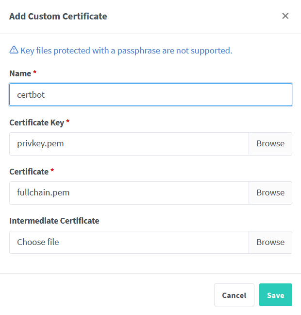

Auto-hospedagem do Vaultwarden no Raspberry Pi Zero 2¶
Porquê?¶
Muitas pessoas utilizam palavras-passe simples ou reutilizadas online porque são mais fáceis de memorizar.Embora eu fizesse o mesmo, percebi que armazenar palavras-passe nos browsers não é de todo seguro nem aconselhável.
Para melhorar a minha segurança, decidi fazer este projeto de um gestor de palavras-passe caseiro utilizando Vaultwarden.
O Vaultwarden é uma alternativa leve e "auto-hospedada" ao Bitwarden. As funcionalidades são as mesmas, mas é otimizado para dispositivos de baixo consumo como o Raspberry Pi Zero 2W. Além disso, inclui funcionalidades como Autenticação Multi-Fator (MFA), backups, encriptação SSL e acesso remoto, garantindo uma maior segurança enquanto mantenho o controlo total sobre os meus logins.
Para alcançar este objetivo, utilizei o seguinte hardware:
- Raspberry Pi Zero 2 W, compacto e de baixo consumo, ideal para este tipo de aplicações.
- Waveshare 2.13 polegadas e-paper HAT v4
- Cartão MicroSD de 32GB, 16Gb chega mas why not.
- Leitor de cartões
- PC com Windows
Flashar o Raspberry Pi OS Lite (64 bits)¶
O primeiro passo foi flashar o Raspberry Pi OS Lite (64 bits) no cartão microSD. Utilizei a ferramenta Raspberry Pi Imager para este efeito.
- Inserir o cartão microSD no leitor de cartões (obvio).
- Abrir o Raspberry Pi Imager e selecionar Choose OS > Raspberry Pi OS (Other) > Raspberry Pi OS Lite (64-bit).
- Escolher o cartão microSD como dispositivo de armazenamento.
- Clicar em Next e depois em Edit Settings para configurar:
- Ativar Set hostname, definir um nome de utilizador e palavra-passe, Configurar Wireless LAN e ativar SSH para permitir o acesso remoto.
Ao ativar o SSH (secure shell) consigo aceder e controlar remotamente o meu Raspberry Pi a partir de outro dispositivo. Como o Raspberry Pi Zero 2W é frequentemente utilizado sem monitor ou teclado (headless), ter SSH torna-se uma forma conveniente de configurar e gerir o sistema através da rede.
- Guardar e clicar em Sim para utilizar as definições, depois aguardar a gravação.
Ligar via SSH¶
Como ativei o SSH durante a instalação do sistema operativo, posso agora ligar-me ao Raspberry Pi via SSH utilizando o PuTTY:
- Inserir o cartão microSD no Raspberry Pi e ligá-lo à corrente.
- Abrir o PuTTY no PC com Windows.
- Introduzir o endereço IP do Raspberry Pi (obtido via nmap) no campo Host Name (or IP address).
- Certificar-me de que a Porta está definida para
22e o Tipo de conexão é SSH. - Clicar em Open para iniciar a ligação.
- Quando solicitado, introduzir o nome de utilizador e a palavra-passe definidos na configuração.
No terminal¶
Para garantir que tudo corre sem problemas, comecei por atualizar e atualizar os pacotes de software:
sudo apt update && sudo apt full-upgrade -y
Instalar Docker e Portainer¶
- Instalar o Docker:
curl -sSL https://get.docker.com | sh - Conceder permissões do Docker ao meu utilizador (joaof):
sudo usermod -aG docker joaof - Reiniciar o sistema para aplicar as alterações:
sudo reboot - Obter a versão mais recente do Portainer:
sudo docker pull portainer/portainer-ce:latest - Criar e executar um contentor Portainer:
sudo docker run -d -p 9000:9000 --restart=always --name=portainer -v /var/run/docker.sock:/var/run/docker.sock -v portainer_data:/data portainer/portainer-ce:latest - Abrir um navegador web e aceder à interface do Portainer em:
http://192.168.1.228:9000
Instalar e Configurar o Vaultwarden¶
Depois de criar uma conta no Portainer, segui estes passos para instalar e configurar o Vaultwarden no Raspberry Pi.
- Volumes > Adicionar Volume
- Criar um volume chamado VaultwardenServer
- Contentores > Adicionar Contentor e configurar da seguinte forma:
- Nome: Vaultwarden
- Imagem: vaultwarden/server:1.32.0 (a versão mais recente não estava a funcionar)
- Mapear as portas: 8080 no host → 80 no contentor.
- Volumes: associar o volume criado (VaultwardenServer) ao diretório
/datano contentor. - Política de reinício: Always
-
Dar Deploy ao contentor e Após alguns minutos, o Vaultwarden aparece como Healthy na interface do Portainer.
-
Agora já posso aceder à interface web do Vaultwarden em:
http://192.168.1.228:8080
Fazer a Reverse Proxy¶
Para aceder ao Vaultwarden de forma segura via HTTPS, utilizei um reverse proxy com o amigo Nginx Proxy Manager.
- Instalar e iniciar o contentor Nginx Proxy Manager:
sudo docker run -d \ --name=nginx-proxy-manager \ -p 81:81 \ -p 80:80 \ -p 443:443 \ -v /srv/dev-disk-by-label-Backup/Docker/nginx-proxy-manager/data:/data \ -v /srv/dev-disk-by-label-Backup/Docker/nginx-proxy-manager/letsencrypt:/etc/letsencrypt \ --restart unless-stopped \ jc21/nginx-proxy-manager:latest -
Para verificar se o contentor iniciou com sucesso, abri o Portainer e confirmei que o contentor
nginx-proxy-managerestava em execução. Outra forma seria executar:docker ps -a.Se o contentor não estivesse a correr, para resolver problemas ver os logs com:
docker logs nginx-proxy-manager. -
Aceder à interface web do nginx proxy manager em:
http://192.168.1.228:81
Proteger o Vaultwarden com HTTPS usando DuckDNS e Let's Encrypt¶
Agora que a reverse proxy está configurada, é preciso garantir o acesso seguro ao Vaultwarden com HTTPS.
Vou usar o DuckDNS para DNS dinâmico e o Let’s Encrypt para gerar um certificado SSL gratuito.
Isto vai me permitir aceder ao Vaultwarden de forma segura a partir de qualquer lugar, sem depender de um IP fixo ou de um domínio pago.
Configurar o DuckDNS¶
- Entrei no site DuckDNS e criei uma conta grátis.
- Adicionei um novo subdomínio
chaveman.duckdns.orge associei-o ao meu endereço IPv4. - Copiei o meu Token do DuckDNS da página (vou precisar dele mais tarde).
Gerar um Certificado SSL usando Let's Encrypt¶
-
Usei o Certbot com o Desafio DNS-01 para obter um certificado SSL para o meu domínio DuckDNS.
Executei o seguinte comando para solicitar um certificado:
sudo apt update && sudo apt install certbot -y sudo certbot certonly --manual --preferred-challenges dns -d chaveman.duckdns.org -
O Certbot forneceu um registo TXT que tem de ser adicionado ao DNS para verificação. Utilizando o URL de atualização do DuckDNS:
https://www.duckdns.org/update?domains=chaveman&token=MEU_TOKEN&txt=VALOR_TXT&verbose=truerecebi um OK, o que significa que o DuckDNS configurou corretamente o meu registo TXT. -
Para garantir que o registo TXT foi publicado, esperei alguns minutos para a propagação do DNS. Utilizando o Google Admin Toolbox (Dig), confirmei que o meu valor TXT aparecia na secção ANSWER, o que significa que estava pronto para prosseguir.
-
Carreguei em Enter e o Certbot criou dois ficheiros pem: fullchain.pem e privkey.pem na pasta:
/etc/letsencrypt/live/Vaultwarden.duckdns.org/ -
Para verificar a validade dos certificados, executei:
sudo certbot certificatese verifiquei que os certificados eram válidos por 90 dias, por isso, para renová-los automaticamente, abri o ficheiro de crontab com o comando:sudo crontab -eAdicionei a seguinte tarefa cron:0 0 * * * certbot renew --quietIsto permite que o Certbot renove automaticamente os certificados SSL, garantindo que a encriptação do site se mantém válida sem necessidade de intervenção manual.
Nginx Proxy Manager¶
Uma vez que o explorador de ficheiros da Web UI apenas mostra ficheiros locais, tive de copiar os ficheiros de certificado do Raspberry Pi para o meu computador para que pudessem ser carregados.
- Copiar os ficheiros de certificado para o meu computador usando
scp(secure copy):scp joaof@192.168.1.228:/etc/letsencrypt/live/Vaultwarden.duckdns.org/fullchain.pem /home/joaof/Documents/Certificates scp joaof@192.168.1.228:/etc/letsencrypt/live/Vaultwarden.duckdns.org/privkey.pem /home/joaof/Documents/Certificates - Voltar à Web UI do Nginx Proxy Manager > SSL Certificates >
Add SSL Certificate > Custom e selecionar os ficheiros de certificado:

- Adicionar Proxy Host:

- Em SSL:

Neste momento já deveria ser possível ligar-me a https://chaveman.duckdns.org, mas estava a obter um erro SSL no navegador. Usando o Port Checker, percebi que o meu ISP estava a bloquear o tráfego de entrada na porta 443.
- Aceder às configurações do router para encaminhar a porta 443 para o Raspberry Pi.
- Finalmente, posso me conectar a https://chaveman.duckdns.org e aceder ao Vaultwarden.
Melhorar este projeto com um E-Paper Display¶
- Ativar SPI no Raspberry Pi executando:
sudo raspi-config - Navegar até Interfacing Options > SPI > Enable
- Após ativar o SPI, reiniciar o sistema:
sudo reboot - Instalar as bibliotecas Python necessárias:
sudo apt-get update sudo apt-get install python3-pip python3-pil python3-numpy sudo apt-get install python3-spidev python3-rpi.gpio sudo apt-get install python3-psutil - Clonei o repositório da waveshareteam e entrei na pasta correta:
git clone https://github.com/waveshareteam/e-Paper.git cd ~/e-Paper/RaspberryPi_JetsonNano/python - Para o meu e-paper Waveshare de 2.13 polegadas v4, utilizei o respectivo módulo epd2in13_V4 de
../lib/waveshare_epde testei-o com../examples/epd2in13_V4_test.py. A partir daí, construí o system_monitor_v1 para exibir informações do sistema, como temperatura, tempo de atividade e endereço IP.

outra possibilidade seria obter um dominio e cloudflare tunnel
🚧 Work in Progress 🚧